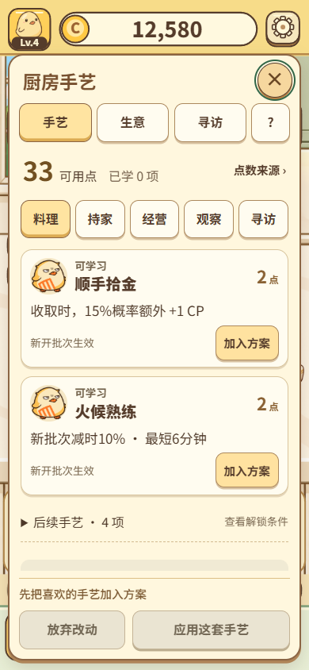
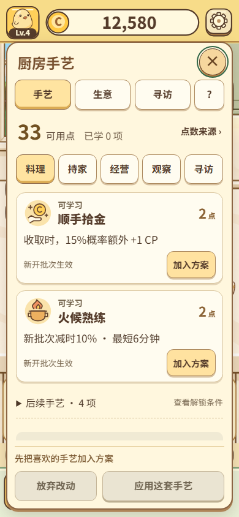
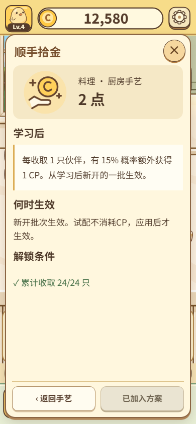
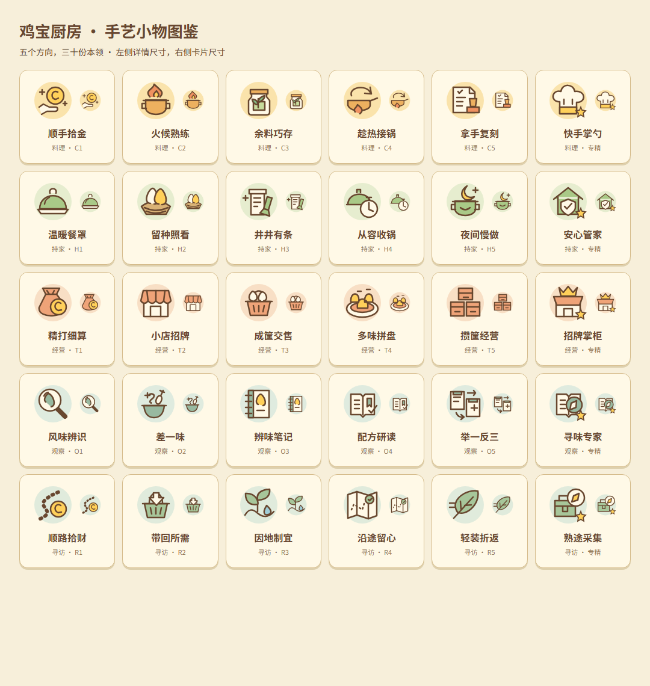
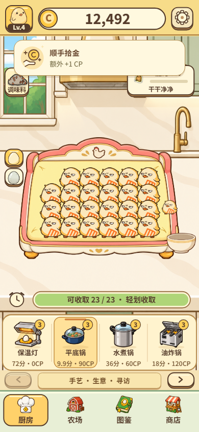
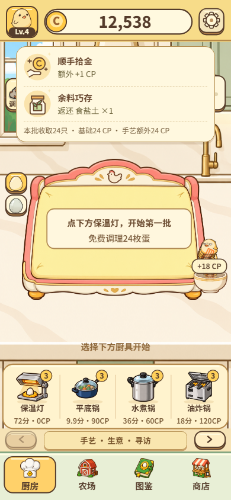
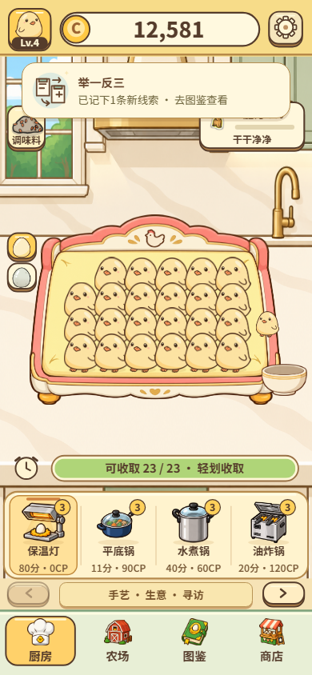
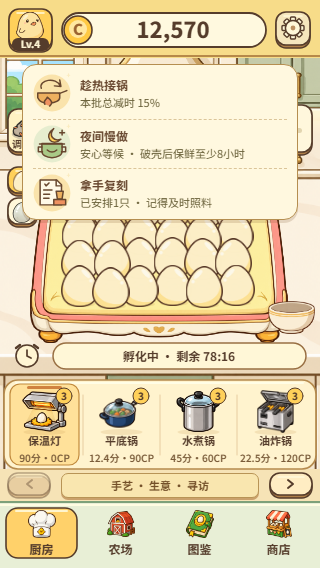
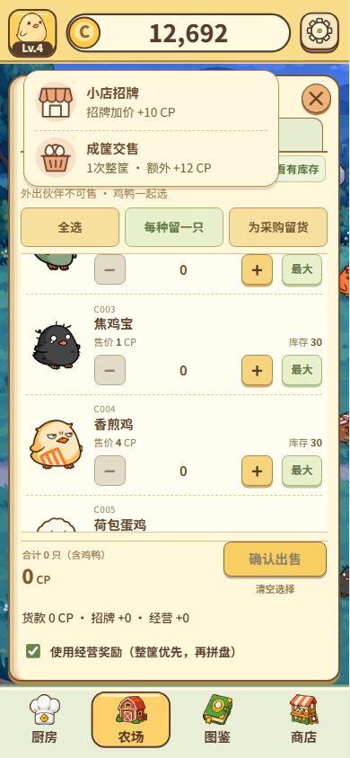
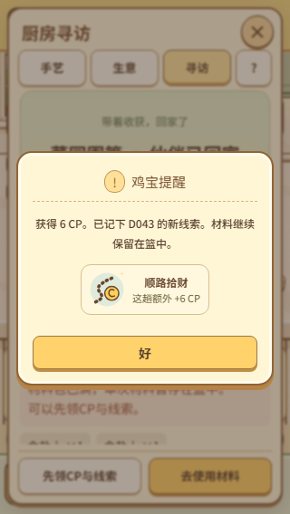

鸡宝厨房 · 手艺小物与触发反馈
30 枚专属图标。以下均为实际运行截图；提示只展示已结算结果，动画不参与收益计算。
列表前后

之前：同一方向复用鸡宝头像。
现在：每项手艺都有对应物件，详情沿用同一图案。
详情：放大图标与完整效果、条件并排建立关联。三十份本领

真实动画录像
手艺触发

顺手拾金：图标弹出，立即显示额外 +1 CP。
余料巧存：收完本批后显示返还材料与汇总。
举一反三：真实记下新线索后才出现。
三项同时触发：最小手机尺寸下也能完整显示。
经营收益：分别说明招牌加价、整筐额外收益。
寻访拾财：直接进入原有领取回执。验证：256 项测试、12 组专项浏览器检查、5 种窗口尺寸。真机安装待连接手机后进行。交付说明 · 专项检查记录